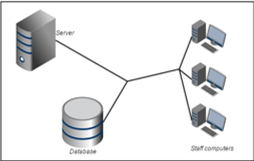
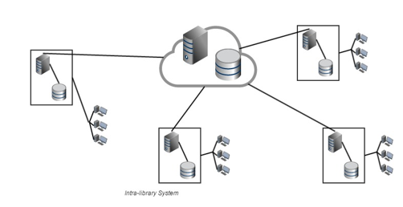

Library System Development Implementing Integrated Book Circulation for Interlibrary Loan
Supervisor : Yen Lina Prasetio, S.Kom., M.CompSc.
Author : Willy, S.Kom | Elisabeth Oktaviani, S.Kom | Cinthya Dwi Lindy, S.Kom
I want to loan a book
But...
My library has no available collection of that book!
So...
I search another library, but...
they only loan the book to their own organization or institution members
You might be only able to read the collection in place or worst you are not allowed to access the collection
Solution
Make networks of libraries so that the member of a library can access another library's collection.
Introduction
Problems
how to...?
- Integrate book circulation system on certain territory
- Implement easy to use and to understand online book loaning flow
Purpose
- Develop web-based integrated library circulation software
- Building a library system to facilitate an automated interlibrary-loan
- Designing and implement good interface
- Develop an integrated payment system
Solution
Features
| OPAC | |
| User Management | |
| Book Management | |
| Collection Loaning System | |
| Review and Rating | |
 |
Integrated Circulation |
Suggested Library System
- Intra-Library System
- Inter-Library System
Intra-Library System
- Consists of transactions done on inside library
- Selective book info syncing to server (Only downloads needed book information based on owned collection)

Inter-Library System
- Only consists of API that facilitates inter-library transactions
- Has full information on libraries' collections availability
- Has full information on book on the database
- Hosts optional features such as email notifications from application

Why distributed system? Why not centralized server?
- If centralized and there are connection problems on main server, all application will be inaccesible
- Easy to scalable on both Intra and Inter-Libraries client and server side